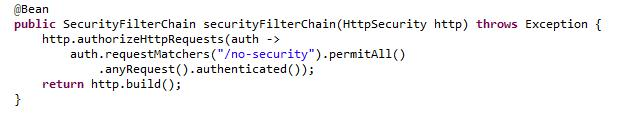
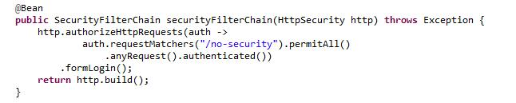
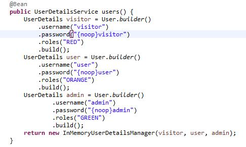
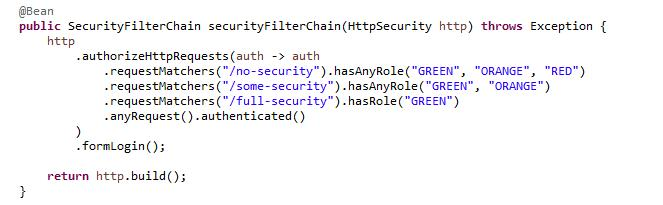
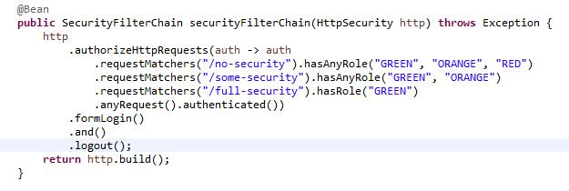

Applying the basics.

Lars Martens
12 February, 2025
In the previous article we discussed the basic building blocks of Spring Security:
- The Spring Security dependency.
- A configuration class annotated with @Configuration and @EnableWebSecurity.
- A SecurityFilterChain.
- A UserDetailsService.
- A PasswordEncoder.
Create a web application.
In this article, we are going to get hands-on and use these building blocks to secure an application. So, let's start by creating our
web application. Go to the Spring Initializr page at: https://start.spring.io/ and use the initializer to
generate a Spring project. I chose Java and Maven, but you can select whatever you prefer. The only dependency we will add for now is the Spring
Web dependency, which is all we need to create a basic web application.

Save the zip file, extract it to a folder of your choice, and import the project into your preferred IDE. Now, let's create a controller class in our
application. I created a new package named 'controller' inside the main package of the application. Within this controller package, I created a new class called
UserController. However, you can choose a different name or structure if you prefer.

Give the class the @RestController annotation and create three endpoints, as shown in the code example. Since we haven't added security to our
application yet, these endpoints will be accessible to anyone. Don't worry, we will secure them soon. Here is the code for the class:
package com.spring.basics.SpringBasics.controller;
import org.springframework.web.bind.annotation.GetMapping;
import org.springframework.web.bind.annotation.RestController;
@RestController
public class UserController {
@GetMapping("/no-security")
public String openToAll() {
return "Welcome to all";
}
@GetMapping("/some-security")
public String openToSome() {
return "Welcome to some";
}
@GetMapping("/full-security")
public String openToOne() {
return "Welcome to only one";
}
}
The Spring Initializer has generated an application class for you. Since I named my project SpringBasics, the generated application class in my
project is called SpringBasicsApplication. Yours might have a different name.
Locate your application class and run it to start your Spring application. Your web application also includes an embedded web server, which starts automatically
when you run the application. This server will host your application at the default address: http://localhost:8080.
With your application running, open your web browser and navigate to the first endpoint we created at: http://localhost:8080/no-security. You should
see a screen like this:

Our application allows access to the /no-security endpoint, as confirmed by the fact that we can open this page and see the "Welcome to all" message.
You can also visit the other two endpoints to verify that they are accessible. Simply modify the URL by replacing /no-security with /some-security
or /full-security.
We have a web application running on an embedded server. This application includes three endpoints, all of which are accessible to anyone, including unauthenticated
users. At this point, we have zero security in place. Let's change that.
Add the security dependency.
The first and most important step in securing our application is adding the Spring Security dependency. In a Maven project (which is what I’m using), you can do this
by adding the following code to the pom.xml file:
<dependency>
<groupId>org.springframework.boot</groupId>
<artifactId>spring-boot-starter-security</artifactId>
</dependency>
Now that we have added the security dependency, stop your application. In Eclipse you can do that by pressing the stop button in the console window:

Restart the application to apply the changes we made. Then, try accessing one of the three endpoints again. For example, type
http://localhost:8080/no-security into the address bar of your web browser and press Enter. You should now see a screen like this:

What happened? We tried to visit http://localhost:8080/no-security, but instead of seeing that page, we were redirected to a login page at
http://localhost:8080/login.
By adding the Spring Security dependency, we have enabled security in our application. When security is enabled, Spring restricts access to all endpoints for
unauthenticated users. Anytime an unauthenticated user tries to visit our endpoints, they are automatically redirected to the default login page at /login.
Restricting access for unauthenticated users and redirecting them to an HTML login form at /login are just a few of Spring Security’s default features.
But there’s more: try submitting the login form without entering a username or password and Spring will show a validation message asking you to fill out the fields.
And if you try logging in with an incorrect username or password, Spring will redirect you to an empty login form and display the error message 'Bad credentials.'
These built-in security behaviors are useful, but there's a problem: our previously accessible web application is now completely locked down! Even we, the developers, are
locked out.
But don't worry, Spring has you covered. Each time we start our application Spring creates a default user with credentials we can use to log into the application. The
default username is 'user' and the default password is being displayed in the console at startup:

The password displayed in the console is encoded using the BCrypt algorithm, which Spring Security applies by default. Copy the generated password from the console and
use 'user' as the username to log in. Once authenticated, Spring will redirect you back to the page you originally tried to visit. So, if you were unauthenticated and tried
to visit http://localhost:8080/some-security, Spring would have redirected you to the login page and upon successful authentication would have shown you that
http://localhost:8080/some-security page that you were trying to visit. If you tried to visit a different page, then that's the page that Spring will show you
upon successful authentication.
Right now, we have security enabled and a default user, but that’s not very useful. Our goal is to create an application that supports multiple users with proper
authentication. To do this, we need to configure our application. Let's create a Configuration Class.
Add a configuration class.
I created a new package named "config" inside the main package of the application. Inside this config package, I added a new class called ProjectConfig.
Of course, you can structure your application differently if you prefer.

As explained it the previous article, we are going to give this class
the @Configuration and @EnableWebSecurity annotations. It's inside this class that we are going to be handling most of the security aspects of
our application.
Add a SecurityFilterChain.
To handle authorization, we need a SecurityFilterChain. Once we add a SecurityFilterChain to our application, Spring assumes that we are
handling authorization ourselves. This means that Spring will no longer present users with a login form or automatically secure our endpoints for us. Instead,
handling both login and security will become our responsibility. Similarly, when Spring detects that we are managing authorization ourselves, such as by declaring a
UserDetailsService bean, it will no longer provide a default user and password for the application.
Let's add a SecurityFilterChain in our ProjectConfig class:

By adding this SecurityFilterChain we have locked all our endpoints except the /no-security endpoint that is open
to all. Users will be able to visit the /no-security endpoint, but when they try to go to one of our other endpoints, they will see the following 403 error
message:

Remember to stop and restart your application every time you make changes. Otherwise, those changes will not take effect.
As mentioned earlier, Spring no longer automatically presents users with the default login form when they try to access a protected endpoint while unauthenticated. We
now need to handle this ourselves. To add form login capabilities to our application, adjust the SecurityFilterChain by including the following line:
.formLogin():

Adding .formLogin() to our SecurityFilterChain is functionally the same as adding .formLogin(Customizer.withDefaults()). Both
methods enable form-based authentication with the default settings. The .formLogin() method is simply a shorthand that internally calls
.formLogin(Customizer.withDefaults()).
Add a UserDetailsService.
So far, we've added the security dependency, created a configuration class, and defined our SecurityFilterChain. This means we’ve already worked with
three of the core building blocks of Spring Security. Now, let’s move on to the fourth building block: defining users. By doing this, we can experiment with roles and
authorities. This requires providing Spring with a UserDetailsService, so it can manage authentication and authorization.
While roles and authorities are often used interchangeably, they are not the same thing. Roles in Spring Security are high-level groupings of permissions. For
example, an administrator could have the role 'ADMIN', which may group the authorities read, write, delete, and update. Authorities, on the other hand, represent
specific permissions. For instance, a regular user might have the role 'USER' and only the authorities 'read' and 'write'.
Defining roles and assigning authorities to them is up to us, giving us the flexibility to customize security in our application.
As an example, I have created three users, using the names of colors to define their roles. Roles or authorities are not fixed concepts in Spring Security, we can
use any String to create them. We will use the SecurityFilterChain to control the level of access associated with a specific role.c
- The user with the least access is named 'visitor' and has been assigned the role 'RED'.
- The next user will be given more access, had the role 'ORANGE' and the username 'user'.
- The final user, 'admin', has the most access and receives the role 'GREEN'.
To make it easier to test these users, I’ve given them passwords that are the same as their usernames (e.g., the password for the 'visitor' is 'visitor').
In order for Spring to access a repository of these users, I’ve created a UserDetailsService bean. Here is the code:

We will regulated the levels of access a user has in our application by only assigning them roles. I haven’t made use of authorities.
The decision to use both roles and authorities depends on the level of fine-grained control you need in your application. For more complex applications, it might be
necessary to use both. However, for our relatively simple application with only three endpoints, using authorities would be a bit of an overkill.
- Authorities allow you to handle what a user is allowed to do or access in greater detail.
- Roles group these authorities together, making it easier to assign them to users in one go.
This approach of grouping authorities together is more practical than assigning each individual authority to every user that needs it.
Let's rewrite our SecurityFilterChain so that it handles the different roles we’ve created. We want to ensure that none of our endpoints are
accessible without authentication. Here's the breakdown of how access should be handled:
- The user with the least access (role 'RED') should only be able to access the /no-security endpoint.
- The user with a bit more access (role 'ORANGE') should be able to access /no-security and /some-security, but should not have access to the
/full-security endpoint.
- The 'admin' user (role 'GREEN') should have access to all three endpoints.
Here’s how the SecurityFilterChain would look after this rewrite:

Don't forget to stop and restart your application.
Now that we have a UserDetailsService and a SecurityFilterChain set up, you can go ahead and experiment with the different user accounts.
Since we used .anyRequest().authenticated() to lock everything down, none of the endpoints should be accessible without authentication. If you try to
access an endpoint without being logged in, it will fail, and you will be redirected to the login screen.
Try logging in with the username 'visitor' and the password 'visitor'. Once logged in, you should only have access to the /no-security endpoint.
If you try to access an endpoint that you don't have the appropriate role for, such as /some-security or /full-security, you will see a
whitelabel error page. This is a 403 Forbidden error, which means our security is working as intended—this user doesn't have the necessary permissions for
those endpoints.
While we could customize this error page to make it look more professional, for the purpose of this article, the default error page clearly indicates that the user
doesn't have the required authorization and is sufficient.

At the moment, if you want to switch users, you will need to stop and restart the application. This is because there's no logout functionality implemented yet.
Let's fix this by adding logout capabilities to our SecurityFilterChain. To do this, we simply need to include .logout() in the configuration.
This will enable Spring Security's default logout mechanism. Here’s the updated SecurityFilterChain with logout functionality:

By adding .logout(), we’ve enabled the default logout behavior of Spring Security. You can now visit the URL http://localhost:8080/logout
where you will be presented with a button to log out of the current account. Once you press the logout button, Spring will automatically redirect you to the login page.
From there, you can log in with a different user account to continue testing and experimenting with different user roles and permissions.
Add a PasswordEncoder.
We have now played around with four out of the five Security building blocks: the Spring Security dependency, a configuration class annotated with
@Configuration and @EnableWebSecurity, a SecurityFilterChain and a UserDetailsService. The only element we haven't used
yet is a PasswordEncoder.
Let's explore what happens when we don't provide Spring Security with the necessary information to handle passwords. Up until now, we’ve actually provided Spring with
password handling instructions, even though it may not seem so. This was done by specifying that we would handle passwords without any encoding. We provided this in lines
like this one: .password("{noop}user"), where the {noop} stands for "No Operation" password encoding, meaning the password is stored in plain text.
If we remove these lines from the UserDetailsService, so that it no longer includes the {noop} prefix or any password encoding mechanism, then
users will no longer be able to log in.

And this is the case even when they use correct credentials. Simply because Spring lacks the necessary information to be able to verify that the credentials are correct
in the first place. The user will see a server error with error code 500 and in the console there will be an error message, informing us that there's no PasswordEncoder
mapped:


Let's fix these errors by telling Spring that we'll use BCrypt encoding to hash our passwords, which is the same encoding Spring uses for the default user’s password.
To do this, we need to provide Spring with a PasswordEncoder bean. Simply add the following code to our configuration class:

Stop and restart your application and try to login by using the correct credentials of one of our three users, for instance the credentials user/user. You will notice
that although you are using correct credentials, you are not being authenticated. Spring informs you that your credentials are bad with the following error message:

This situation happens because Spring always saves passwords in their encrypted form. And also expects us to provide them in encrypted form. But in our
UserDetailsService we have saved the passwords unencrypted. So, when we try to login, Spring takes the password that we use in the login form, encrypts
it and then compares that encrypted password to the unencrypted one it receives from our UserDetailsService. Those two will, of course, never match, hence
the 'Bad credentials' error.
Change the UserDetailsService so it takes a PasswordEncoder as a parameter. Spring will make sure that the correct
PasswordEncoder will be injected into the UserDetailsService. Also add code so the encoder hashes the passwords. Like
for instance .password(passwordEncoder.encode("admin")). Don't forget to stop and restart your application after you made the changes:

If at any point you succesfully log in, but get redirected to a 'Whitelabel Error Page' with a 'Not Found, status=404' code (like happened to me), know that
this happened because you did not first try to visit one of the endpoins in our application.
When you go directly to the login page, Spring will not redirect you to the endpoint you were trying to visit before you logged in (because there is none, you
went directly to the login page). In this case, it's default behaviour to redirect you to the home page, which is by default the / endpoint. But we did
not configure this endpoint in our application. That's why you see that 404 not found error page. We can fix this situation by creating a new mapping for this
/ endpoint in our controller class or by configuring a .defaultSuccessUrl() method in our SecurityFilterChain. The
.defaultSuccessUrl() configures where Spring should redirect users when they have succesfully authenticated.
We have now covered all the basic building blocks of Spring Security. With these components, we've been able to handle authentication and authorization for
different users in our web application. I hope this has given you a better understanding of Spring Security, showing that it's not as daunting as it might have seemed
at first, and that you had some fun along the way.